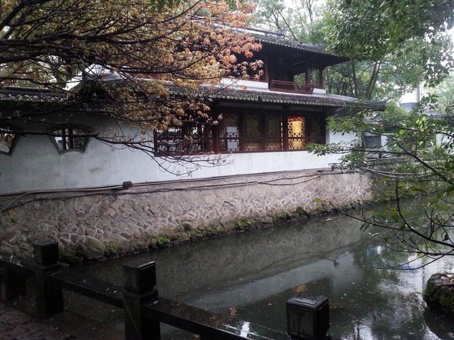

潛虯媚幽姿，飛鴻響遠音。薄霄愧雲浮，棲川怍淵沈。
進德智所拙，退耕力不任。徇祿反窮海，臥痾對空林。
衾枕昧節候，褰開暫窺臨。傾耳聆波瀾，舉目眺嶇嶔。
初景革緒風，新陽改故陰。池塘生春草，園柳變鳴禽。
祁祁傷豳歌，萋萋感楚吟。索居易永久，離群難處心。
持操豈獨古，無悶徵在今。
| 属性名 | 属性值 |
|---|---|
| 姓名 | 谢灵运 |
| 生存时间 | 385~433 |
| 外号 | 谢客 |
| 记录在案的 | 与 谢朓 并称 大小谢 |
謝靈運作為南朝門第最為華貴的士族家庭的子弟，作為東晉名將謝玄之孫、爵位繼承人，又自幼穎悟過人，長成後驕縱自負，在政治上自然抱有很大的雄心。而宋武帝劉裕去世後，諸子年幼，形勢不穩，又使他深深捲入權力鬥爭的漩渦。劉裕的長子劉義符(少帝)即位後，大臣徐羨之等人把持朝政。劉裕次子劉義真(廬陵王)過去甚得父親的歡心，頗有覬覦帝位之意。他與謝靈運關係密切，常對人說，如果他做皇帝，便用謝靈運為宰相。這情況很容易造成矛盾的激化。而謝靈運完全是詩人的性格，高傲、坦露、褊躁，不擅於政治權謀。他常對徐羨之等施以批評攻訐，引起對方的猜忌，終於在永初三年(422)被逐出京都，遷為偏僻的永嘉郡(今浙江溫州)太守。這是謝靈運首次在政治上受到沉重打擊。來永嘉後的第一個冬天，他長久卧病，至明年(景平元年)春始愈，於是登樓觀景，寫下《登池上樓》這一名篇，抒寫鬱悶之情。
《登池上樓》是寫詩人久病初起登樓臨眺時的所見所感。前部分抒發官場失意的牢騷，中間描繪登樓遠望所見到的景物，最後表達了懷人思歸的情緒。詩中成功地描寫了初春時節池水、遠山和春草、鳴禽的變化，使人感到生意盎然。但從全詩的思想情調來看卻有些低沉。
本詩以登池上樓為中心，抒發了種種複雜的情緒。這裏有孤芳自賞的情調，政治失意的牢騷，進退不得的苦悶，對政敵含而不露的怨憤，歸隱的志趣…… 雖然語言頗覺隱晦，卻是真實地表現了內心活動的過程。詩中寫景部分與抒情結合得相當密切，並且成為詩中情緒變化的樞紐。對景物的描繪，也體現出詩人對自然的喜愛和敏感，而這正是他能夠開創山水詩一派的條件。只是，語言過於深奧、句式缺少變化，因求對仗而造成某些重複，也是顯著的弱點。這些都有待於詩歌的發展來糾正。